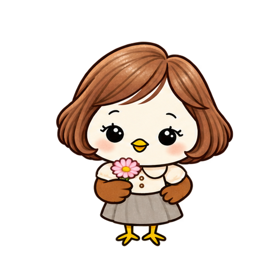
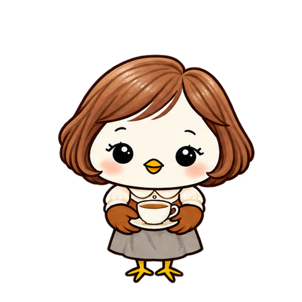
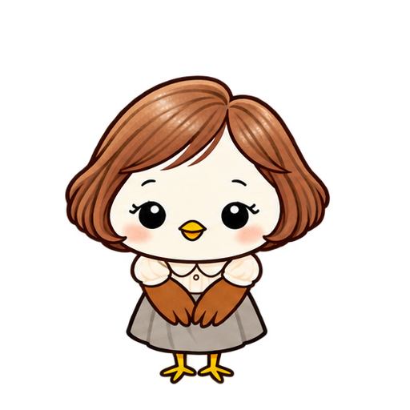
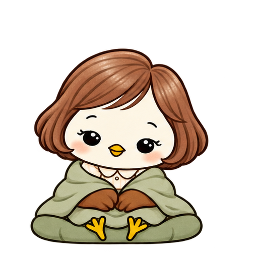

01 / 마음을 전하는 동작
응원해요
꽃 한 송이로 건네는 작은 용기.
작은 꽃을 들고 살며시 흔들며 응원합니다.
새로운 도전을 앞둔 사람에게
수고한 하루에 차 한 잔을.
새로운 시작에 꽃 한 송이를.
당신의 이야기를 전하는 캐릭터를 만듭니다.

봄담이 · 오늘도 수고한 당신에게
작은 노란 부리, 갈색 깃털 날개, 짧은 노란 다리와 새 발. 갈색 단발머리와 옷은 친근함을 더한 의인화 표현이고, 팔처럼 보이는 부분은 날개입니다.
꽃을 들고 응원하고, 고개를 끄덕이고, 따뜻한 차를 건네고, 포근한 쉼을 전합니다. 그림 밖에 동작과 의미를 따로 적어 마음이 더 잘 닿도록 했습니다.
봄담이는 AI봄스튜디오 자체 브랜드 캐릭터이자 제작 스타일 견본입니다. 고객의 브랜드에는 별도의 맞춤 캐릭터를 제안합니다.
그림을 천천히 살펴보고, 움직임 버튼으로 동작도 만나 보세요.

꽃 한 송이로 건네는 작은 용기.
작은 꽃을 들고 살며시 흔들며 응원합니다.
새로운 도전을 앞둔 사람에게

당신의 말을 잘 들었어요.
고개를 천천히 끄덕여 이해와 공감을 전합니다.
부탁이나 설명을 들었을 때
오늘의 수고를 알아주는 차 한 잔.
두 날개로 따뜻한 찻잔을 받쳐 건넵니다.
바쁜 하루를 보낸 동료와 가족에게

오늘은 여기까지, 포근하게 쉬어요.
담요를 두르고 눈을 감아 편안하게 쉽니다.
지친 사람에게, 잠들기 전 인사로
움직임은 8프레임 애니메이션 시안입니다. 프레임 사이 형태의 미세한 차이가 남아 있어 최종 영상 납품의 품질 견본으로 보장하지 않습니다. 추가 동작 제작은 범위와 견적을 별도로 확인합니다.
.ai는 착수 전 실제 제작·호환 확인 후 제공 가능 여부를 확정합니다.
선택한 수량만큼 완성된 최종 디자인과 각 최종안의 편집 원본 전체를 제공합니다. 2개는 단순히 비교용 시안 2개를 뜻하지 않습니다. 방향 시안 수와 최종 납품 수량은 착수 전에 문서로 정합니다.
선택 방향의 색상·배치 등 부분 수정 총 2회가 상품 전체에 포함됩니다. 의견을 한 번에 모아 전달한 것을 1회로 계산합니다. 당사 오류는 무료 정정합니다.
수정 횟수 초과·새 콘셉트·추가 디자인·인쇄 도안 편집·실물 제작은 비용과 일정을 안내하고 동의받은 뒤 진행합니다. 사전 동의 없이 추가금을 청구하지 않습니다.
AI로 아이디어와 초안을 탐색한 뒤 형태·글자·색상을 보정하고 실제 벡터 경로로 재제작합니다. 글꼴 사용 조건, 글자 윤곽선, 작은 크기·단색 가독성, 합의한 인쇄 규격을 확인합니다.
제공 파일은 SVG 벡터 원본·인쇄용 PDF·투명 PNG·JPG, 컬러·흑백 버전과 사용 안내입니다. 원본 추가금은 없습니다. .ai 형식이 꼭 필요하면 착수 전 실제 제작·편집·호환 확인 후 제공 가능 여부를 확정합니다. 확장자만 바꾼 파일이나 검증하지 않은 파일은 약속하지 않습니다. PNG·JPG는 합의한 인쇄 크기 기준 300dpi 이상으로 준비합니다. 폰트 파일·미선택 시안·중간 작업물은 제공하지 않습니다. 일정은 자료와 범위 확정 후 협의합니다. 기존 계약과 이미 발송한 견적은 개별 합의 조건을 따릅니다. 상표 등록·독점권은 보장하지 않습니다.
정지 이미지 기준입니다. 복잡한 묘사·질감은 착수 전 가능 범위를 확인합니다. 애니메이션·리깅·Live2D·방송 오버레이·이모티콘 세트·브랜드 매뉴얼은 포함되지 않습니다. 추가 작업은 별도 협의합니다.
봄담이 자체와 전시된 4종 세트를 판매·양도하는 상품이 아닙니다. 별도 사용·양도는 협의합니다. 상업 활용 매체·범위와 권리 조건은 착수 전 정합니다. 인쇄·배송비는 디자인비와 별도이며 업체 규격·견적·배송 가능 여부를 확인한 뒤 안내합니다.
브랜드, 원하는 대상과 분위기, 필요한 크기와 일정을 알려 주세요.
필요한 최종 납품 수량과 방향 시안 수를 구분해 착수 전에 정합니다.
선택안의 색상과 표정을 합의한 범위에서 다듬습니다.
최종 그림과 캐릭터의 의미, 사용 안내를 함께 전달합니다.
브랜드명 · 캐릭터 대상 · 분위기 · 사용처 · 희망 일정을 미리 정리해 주세요.
봄담이의 별도 사용이나 추가 동작 제작도 상담할 수 있습니다.
크몽 캐릭터 상품은 승인 대기 중입니다. 아래 링크는 프로필을 여는 링크이며 문의창이 바로 열리지 않습니다. 상품 승인 후 공개된 서비스에서 문의 경로를 확인해 주세요.
기본 상품은 고객 브랜드에 맞춘 별도 캐릭터 제작입니다. 봄담이 자체의 사용·양도와 4종 세트 활용은 조건과 범위를 따로 협의합니다.
메신저 이미지 파일과 플랫폼에 등록된 이모티콘 상품은 다릅니다. 플랫폼별 규격 정리·심사 대행·승인 보장은 기본 범위에 포함되지 않습니다.
AI를 아이디어와 이미지 제작에 활용하고 최종안을 검토·정리합니다. 최종 납품안은 합의한 사업 홍보에 사용할 수 있으며, 상표 등록 가능성이나 독점권은 기본 보장하지 않습니다. 사용 권한이 있는 참고 자료를 보내 주세요.